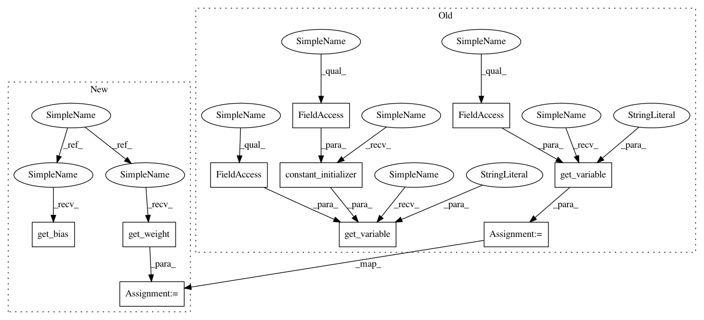

ffd5f4f328155460dc9adeb91ddf28782e96c0dd,hypergan/ops/tensorflow/ops.py,TensorflowOps,deconv2d,#TensorflowOps#Any#Any#Any#Any#Any#Any#,91
Before Change
init_bias = 0.
with tf.variable_scope(self.generate_name()):
// filter : [height, width, output_channels, in_channels]
w = tf.get_variable("w", [filter_h, filter_w, output_shape[-1], net.get_shape()[-1]], dtype=self.dtype, initializer=initializer)
try:
deconv = tf.nn.conv2d_transpose(net, w, output_shape=output_shape,
strides=[1, stride_h, stride_w, 1])
// Support for versions of TensorFlow before 0.7.0
except AttributeError:
deconv = tf.nn.deconv2d(net, w, output_shape=output_shape,
strides=[1, stride_h, stride_w, 1])
biases = tf.get_variable("biases", [output_shape[-1]], dtype=self.dtype,initializer=tf.constant_initializer(init_bias, dtype=self.dtype))
deconv = tf.reshape(tf.nn.bias_add(deconv, biases), deconv.get_shape())
return deconv
After Change
conv = tf.nn.bias_add(conv, biases)
return conv
def deconv2d(self, net, filter_w, filter_h, stride_w, stride_h, output_dim):
self.assert_tensor(net)
initializer = self.initializer()
shape = self.shape(net)
output_shape = [shape[0], shape[1]*stride_h, shape[2]*stride_w, output_dim]
init_bias = 0.
with tf.variable_scope(self.generate_name()):
// filter : [height, width, output_channels, in_channels]
w = self.get_weight([filter_h, filter_w, output_dim, output_dim])
deconv = tf.nn.conv2d_transpose(net, w, output_shape=output_shape,
strides=[1, stride_h, stride_w, 1])
biases = self.get_bias([output_shape[-1]])
deconv = tf.reshape(tf.nn.bias_add(deconv, biases), deconv.get_shape())
return deconv
In pattern: SUPERPATTERN
Frequency: 3
Non-data size: 10
Instances
Project Name: HyperGAN/HyperGAN
Commit Name: ffd5f4f328155460dc9adeb91ddf28782e96c0dd
Time: 2017-06-02
Author: martyn@255bits.com
File Name: hypergan/ops/tensorflow/ops.py
Class Name: TensorflowOps
Method Name: deconv2d
Project Name: HyperGAN/HyperGAN
Commit Name: ffd5f4f328155460dc9adeb91ddf28782e96c0dd
Time: 2017-06-02
Author: martyn@255bits.com
File Name: hypergan/ops/tensorflow/ops.py
Class Name: TensorflowOps
Method Name: conv2d
Project Name: HyperGAN/HyperGAN
Commit Name: ffd5f4f328155460dc9adeb91ddf28782e96c0dd
Time: 2017-06-02
Author: martyn@255bits.com
File Name: hypergan/ops/tensorflow/ops.py
Class Name: TensorflowOps
Method Name: linear
Project Name: HyperGAN/HyperGAN
Commit Name: ffd5f4f328155460dc9adeb91ddf28782e96c0dd
Time: 2017-06-02
Author: martyn@255bits.com
File Name: hypergan/ops/tensorflow/ops.py
Class Name: TensorflowOps
Method Name: deconv2d